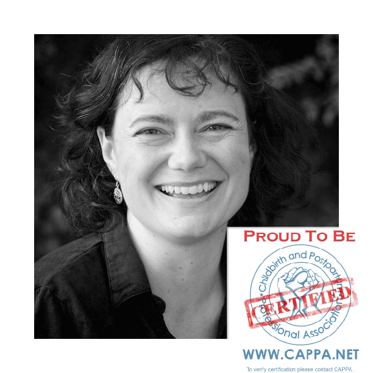

Hello, I'm Paige.
Several years ago I accompanied a friend during her birthing process. Immediately, I felt at home. Supporting her labor felt natural, powerful, and fulfilling. Over the next few years I continued to provide labor support to the occasional friend. These wonderful people told me I had provided a calm presence, comfort, and support. A bud of an idea nestled in the back of my mind eventually flourishing into a calling: to become a professional doula.
Throughout my adult life I have studied spiritual practices and meditation techniques. This path complements my formal education: a lifetime ago, I received my master's degree in physics from The College of William & Mary in Virginia. Working with various forms of meditation gives me intuitive tools to balance my logical, scientific training. I embrace both! My technical background helps me gather and present information to expecting parents about their birthing options. At the same time, the more intuitive, experiential work leads me to see pregnancy and birth as a rite of passage. I feel called to support this deeply significant transition.
My own baby is now a young teen, and my own dream of being a doula is a reality. I am a Certified Labor Doula through CAPPA (www.cappa.net). I typically support one to two client births a month.